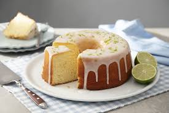

Receitas Populares

Bolo de Chocolate
Receita fácil e deliciosa para os amantes de chocolate.

Bolo de Limão
Bolo de Limão
Um bolo refrescante com sabor cítrico e suave.
Um bolo refrescante com sabor cítrico e suave.

Bolo de Morango
Bolo macio com camadas de morango fresco e creme.